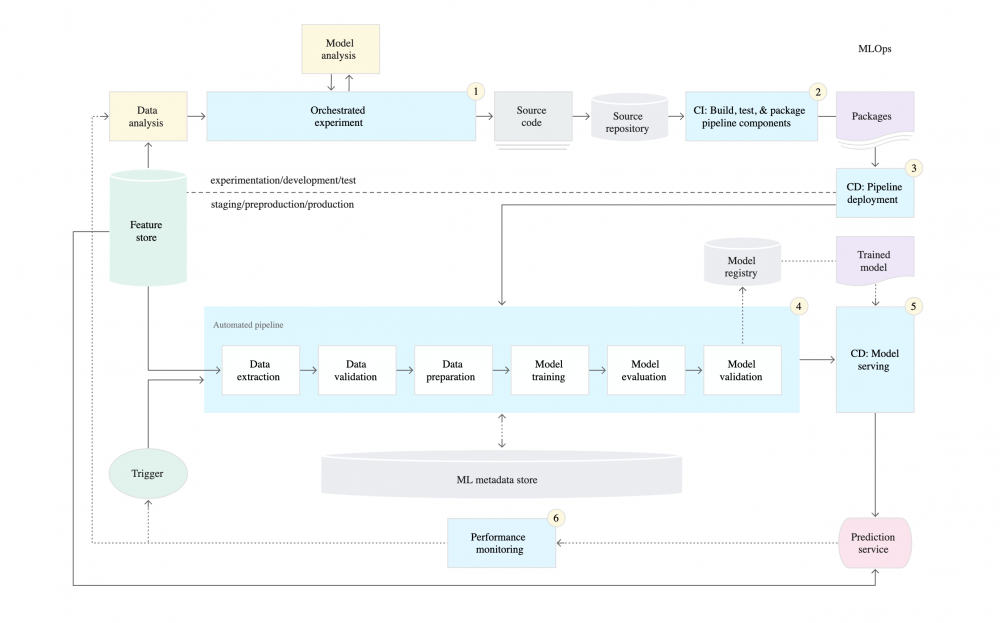

The planets have realigned and we are back to the normal schedule for the meetups, 5pm UK / 9am California. Also good luck today North Americans as you choose the next president.
All Good Things Must End

David and I have finally managed to make it all the way through each of the maturity levels that this google paper describes and man does it feel good! I've hear lots of talk from people saying that the majority of those who are actually doing ML in Production are routinely at maturity level 0 and really is that a bad thing? David and I
covered in the first episodes, but ultimately I think its good to see what google is saying gis the gold standard so we can know how they are trying to tackle this beast.
So what did we talk about in the final episode?
CI/CD/CT
Rapidly explore new ideas around feature engineering, model architecture, and hyperparameters
Importance of a model registry
Implementing ML in a production environment doesn't only mean deploying your model as an API for prediction
Honestly, this series has been super informative for me to learn about all the working parts that go into a full-fledged maturity level 2 ML Infra. I also was able to understand the benefits of Continuous Training and also the potential downfalls of doing things manually. listen to the podcast here or watch the video by clicking the button below.
Well Damn! That was a deep dive into how to serve! Theo took us along and showed us all the wisdom he has learned over the years while working with Kubeflow. As you may know, Theo is one of the biggest fanboys when it comes to Kubeflow so it is awesome to see his enthusiasm when he talks about this topic.
A Few Of My
Favorite Topics From The Chat:
Model deployment using the command line
Model deployment using the Python SDK
Istio resources used by KFServing
Shadow
deployment
I know many of you are using Kubeflow and pulling your hair out with some of the obstacles you face. Hopefully, this video can inspire you to keep on pushing through the hardship or maybe it will turn you on to some new features you weren't aware of! Listen in podcast form here. Video Below
That is right Ladies and Gentlemen (and Nonbinary) We have got the cream of the crop Mr. Ravi Kiran Chirravuri - software engineer at Netflix and one of the lead maintainers of the open-sourced tool Metaflow. I've been pretty excited about Metaflow ever since I read this blog post introducing it around the time of reinvent last year. It is an absolute honor to speak with one of the creators, I will try to keep my composure.
What To Expect
You bet your ass I'm gonna ask him where the name came from, because what could be more meta than that? Oh and also a few of these questions:
What's the most unique thing about Metaflow?
What pain points are you trying to alleviate?
What feedback have you gotten from the data scientists using Metaflow at Netflix?
What is
the hardest part about building and operating ML workflows?
I'm sure you have some questions about the tool so feel free to hit reply and give me some questions you would like to see me ask this Wednesday. Or better yet drop into the meetup and ask them yourself!
What is that you say? Your models have been on a diet since quarantine started back in late march? Sure, I bet just like me they don't succumb to late-night vegan Ben and Jerry's binges. 🤔 Me and your model are on the same page.
But is a FAT model bad? In this context, we are talking about an ML Model that is Fair, Accountable, and Transparent. How can we ensure that our model lives up to these standards without raiding the refrigerator? Well, I'm glad you asked, our community member Nick Ball answered that very question in our most recent 2 part medium post.
Some considerations about getting F.A.T.
Fairness
Ethics
Drift
Robustness & sensitivity
Diversity & biased data
Internationality
Accountability
Version everything
Provenance
Logging
Auditability
Transparency
Do you need machine learning?
Do you need nonlinear ML, and in particular, do you need deep learning?
Is a model-agnostic explanation acceptable?
Do you need human-interpretable features?
What are the regulatory requirements?
Do you need reason codes?
Do you need to visualize your model?
Is the setup that you have thus come up with, in fact OK?
Keep up the great work, don't sweat the small stuff or the haters. Get out there and vote!
Check out our slack, youtube, and podcasts if you haven't already. Also, it would mean a lot to me if you filled out this form so I can learn more about the community.